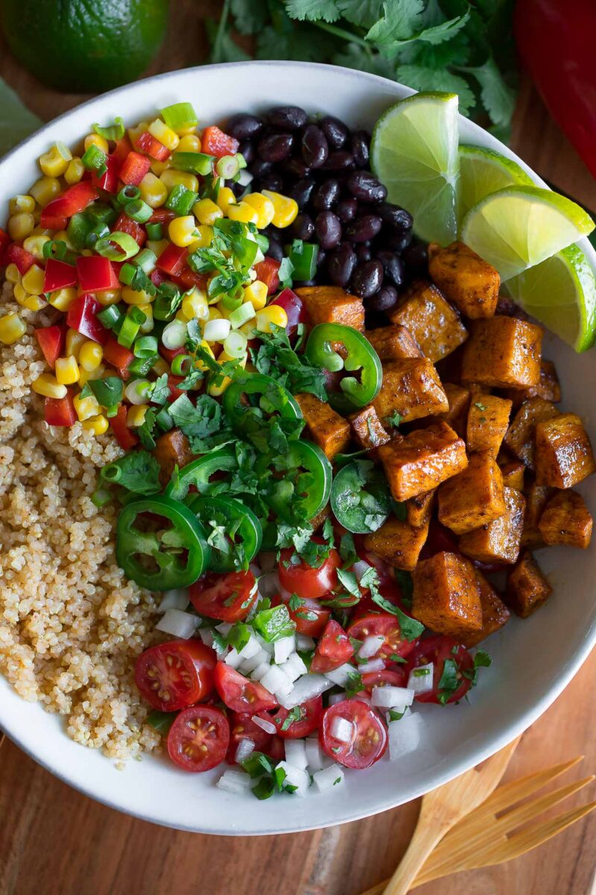

My verdit: This recipe along with the others is super easy to make. I think the only extra thing you'll need for these
recipes are the spices. Finding quinoa may be a hassle and you may think eww quinoa but dude dude DUDE, quinoa's just like rice. I know people make it
seem boujee and extra but it really isn't and it's better for you and in this dish it's soo good. Mexican food have the spice, and the flavor and all the
quinoa does is soak in and absorb all of those juices. Plus this recipe has beans and corn and I freaking love those two things when they come together what can
I say it's a fiesta.
Ingredients
2 Tablespoons Olive Oil
4 Cloves Garlic, Minced
1 Onion, Diced
1 Jalapeno, Seeded and Minced
1 Cup Quinoa, Rinsed
1 Cup Vegetable Broth
1 (15 Ounce) Can Black Beans, Drained and Rinsed
1 (14. Ounce) Can Fire Roasted Diced Tomatoes
1 Cup Frozen Corn
Juice of 1 Lime
2 Teaspoons Chili Powder
½ Teaspoon Cumin
½ Teaspoon Cayenne Pepper
Salt and Pepper to Taste
Cubed Avocado and Parsley for serving
Steps
Heat olive oil in large skillet over medium high heat. Add onion, garlic, and jalapeno and cook until softened. About 2 minutes.
Add black beans, tomatoes, corn, quinoa, vegetable broth, chili powder, cayenne, cumin, and lime juice. Season to taste with salt and pepper and stir.
Bring to a simmer and reduce heat to medium low. Simmer for 20 minutes with the lid on stirring occasionally.
Serve with diced avocado and fresh parsley.
Enjoy!
Watch her cook it
This is probably my favorite recipe. I eat rice and beans like almost everyday and this recipe doesn't really
deviate much from what I'm used to eating. It's an elevated version of what I usually have. It's soo light but fills you up soo much.
You can eat the whole thing and instead of wanting to take a nap you'll want to run around instead. I loved this one, it's for sure my fav,
along with the bean burgers I made one time. If I wasn't soo lazy I'd prbably have those bean burgers every week but I can't help what I am so
I just make rice and beans instead. Beans are great
they're used in this recipe so this recipes fire just because of that fact alone. Also this isn't the original video that I followed, but it's close enough.